Talents & recrutement
Recrutement, sourcing, marque employeur, expérience candidat, sélection et évolution des pratiques RH.
SJ Conseil · RH · formation · transformation du travail
Conseil et formation pour accompagner les talents, les équipes et les métiers dans un monde du travail en transformation.
Du concret. Dès demain.
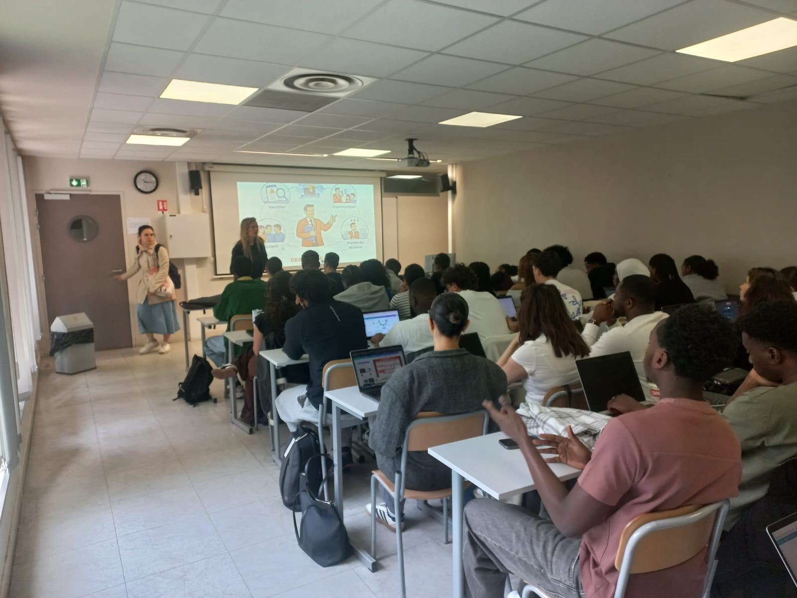
Développer les compétences, révéler les talents et faire progresser les pratiques professionnelles.
Voir les 5 pôles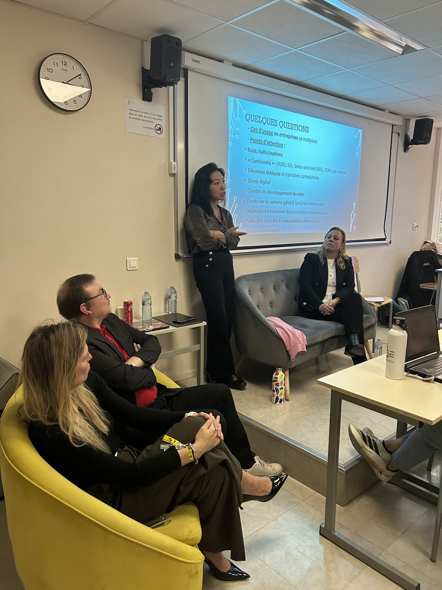
Accompagner les équipes pour identifier la valeur humaine et construire de nouvelles façons de travailler avec l’IA.
Découvrir les 3 offres12+ ansd’expérience
4 000+étudiants accompagnés
100+professionnels accompagnés
Depuis 2019activité indépendante
Formation & RH
Recrutement, sourcing, marque employeur, expérience candidat, sélection et évolution des pratiques RH.
Projet professionnel, employabilité, CV, LinkedIn, pitch, entretiens et accompagnement des parcours.
Ingénierie pédagogique, pédagogies actives, animation d’ateliers et formation de formateurs.
Leadership, communication, collaboration, intelligence collective et accompagnement du changement.
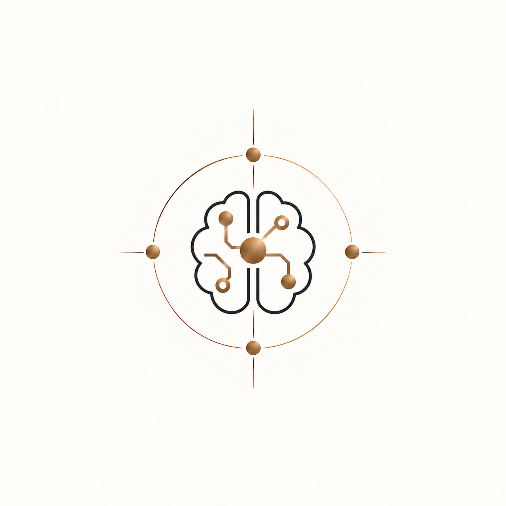
Prompting, usages professionnels de l’IA, IA appliquée aux RH, risques, limites et bonnes pratiques.
Consulting & formation IA
J’accompagne les entreprises dans l’évolution des métiers à l’ère de l’IA : identifier les contributions humaines essentielles, faire évoluer les pratiques et développer les compétences de demain.
Quand l’IA prend en charge une partie du travail, où se situe la valeur humaine ?
Comment préserver le jugement, l’expertise et l’autonomie des collaborateurs ?
Comment construire une coopération qui enrichit réellement le travail ?
Les outils seuls ne suffisent pas à transformer positivement le travail. L’enjeu concerne aussi les compétences, les responsabilités, les décisions et les relations professionnelles.
Avant ou après le déploiement de l’IA, comprendre ce qui fait la valeur de vos métiers pour mieux préparer leur évolution.
Concevoir avec vos équipes des façons de travailler où l’IA enrichit l’expertise, le jugement et l’autonomie.
Renforcer les capacités humaines essentielles pour travailler avec l’IA sans perdre son expertise ni son autonomie.
Formation
Une formation réflexive pour comprendre l’évolution du travail, identifier sa contribution professionnelle et construire un plan d’action personnel.
Formation
Une formation pratique pour s’entraîner à questionner, vérifier, contextualiser et arbitrer avec l’IA.
Valeur humaine
01 Jugement et discernement.
02 Créativité et résolution de problèmes.
03 Intelligence relationnelle.
04 Responsabilité et décision.
05 Autonomie et apprentissage.
Pour qui ? Directions générales, DRH, DSI, managers et équipes métiers.
SJ Conseil intervient sur les dimensions humaines, professionnelles, organisationnelles et managériales, en complément des équipes techniques et de la DSI.
Questions fréquentes
Oui. C’est souvent le bon moment pour clarifier les activités, les responsabilités et les compétences à préserver.
Oui. L’objectif est alors de comprendre les usages réels, les ajustements nécessaires et les compétences à renforcer.
Non. L’accompagnement porte sur les usages, les pratiques métiers, les responsabilités et les compétences humaines.
Oui. Conseil, cadrage des usages et formation peuvent être mobilisés séparément ou combinés selon votre situation.
Sur le terrain
Photos d’interventions, ateliers et situations de travail : la formation est pensée pour faire pratiquer, pas seulement transmettre.
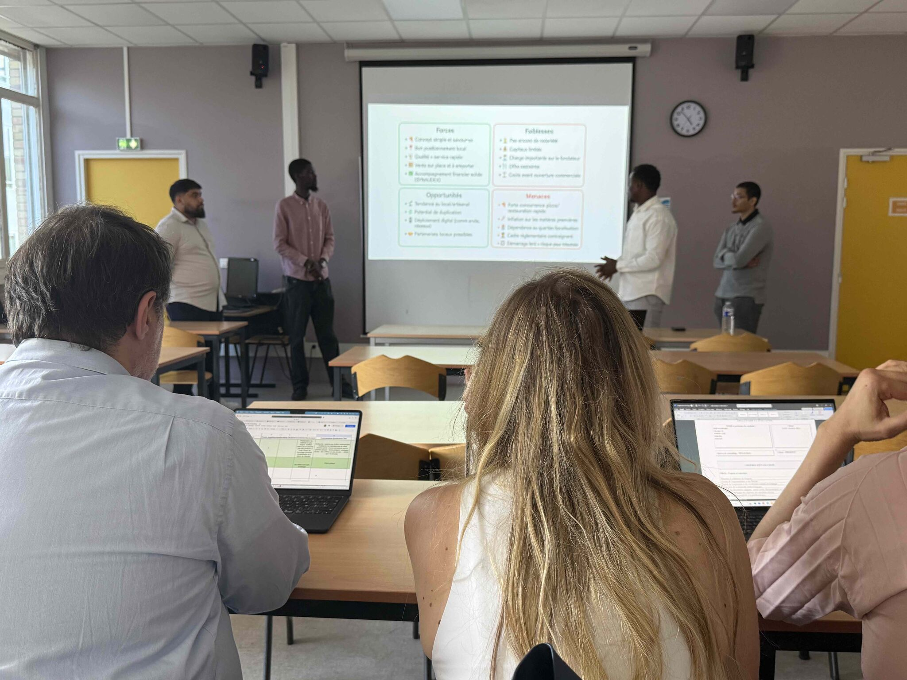
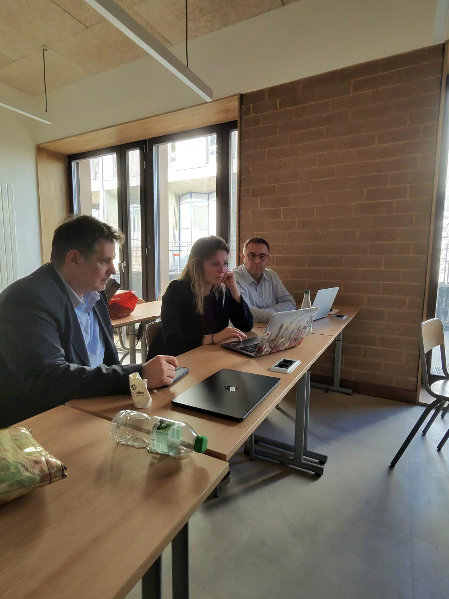
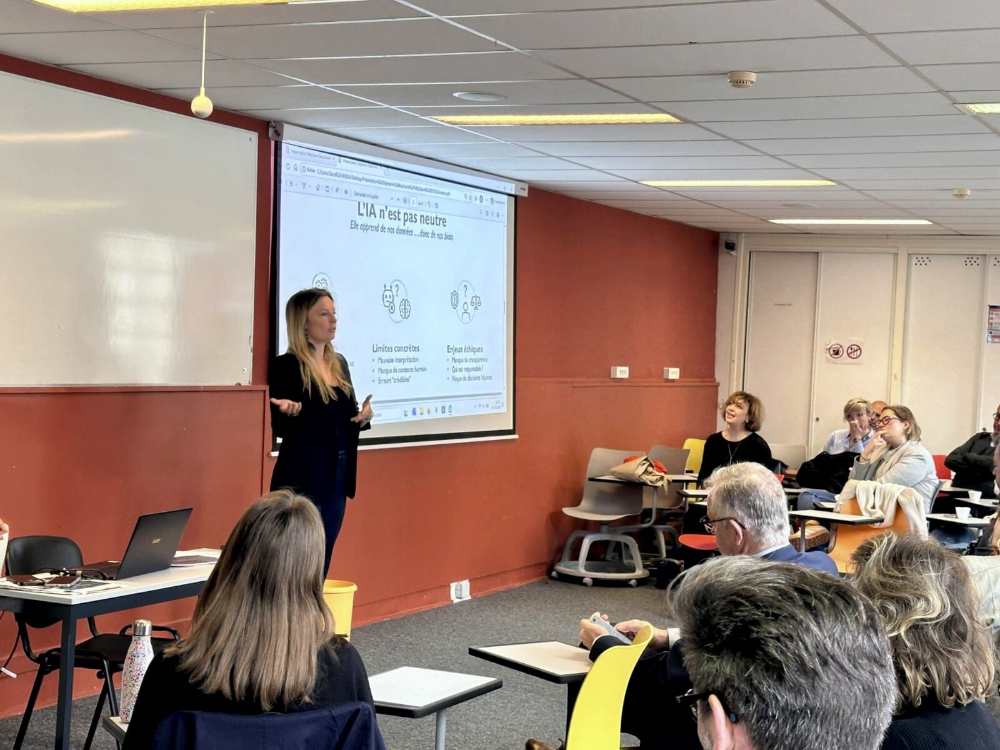
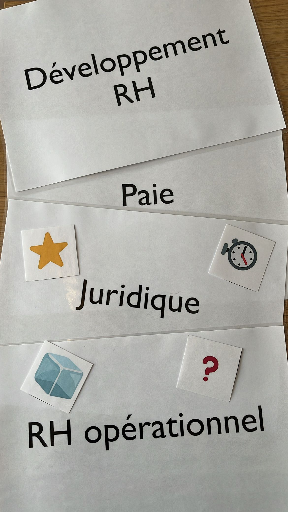
Références
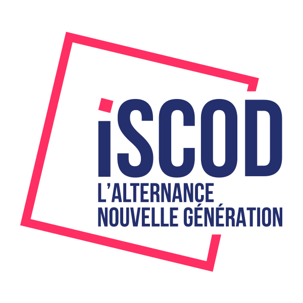
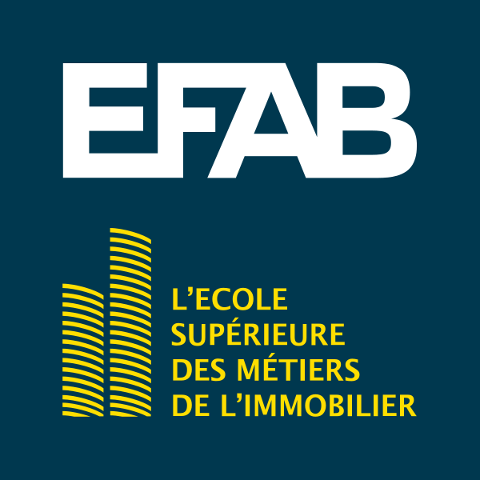
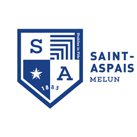
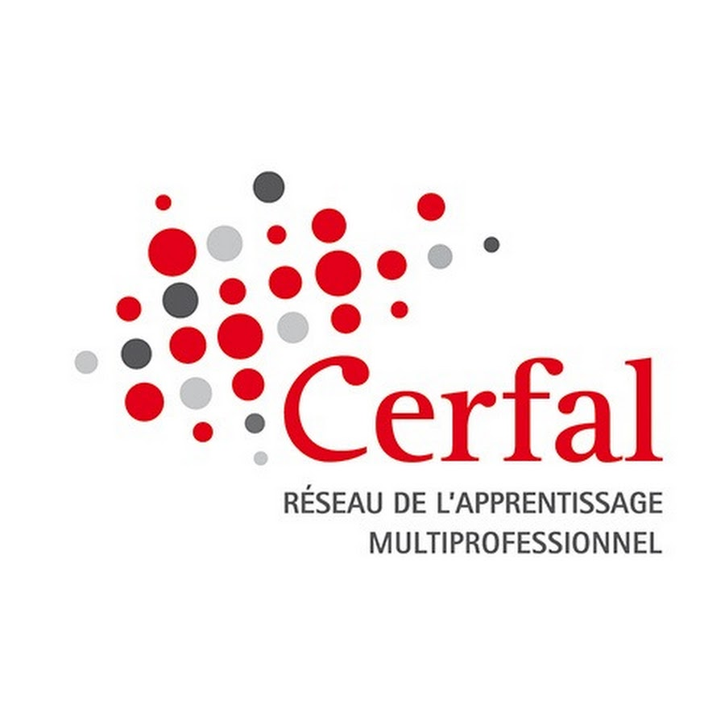

À propos
Consultante RH, formatrice et consultante en évolution des métiers à l’ère de l’IA.
J’accompagne les organisations dans l’évolution de leurs pratiques RH, managériales et professionnelles.
Mon approche part du terrain : comprendre les situations réelles, faire pratiquer, clarifier les responsabilités et développer des compétences directement utiles.
Une présence directe, une exigence de clarté, une énergie de terrain.
Contact
Formation, évolution des métiers ou IA : échangeons sur vos enjeux.
stephanie@sjconseil.fr 06 59 68 45 58 LinkedIn